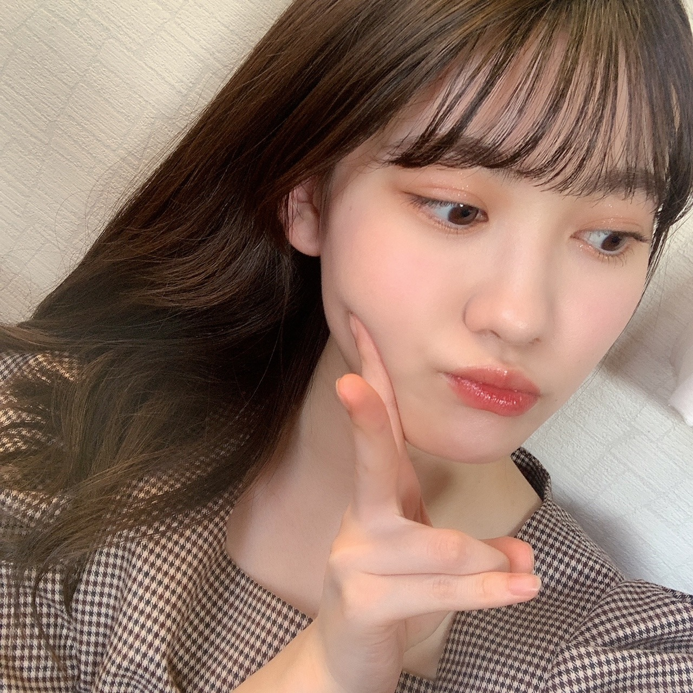
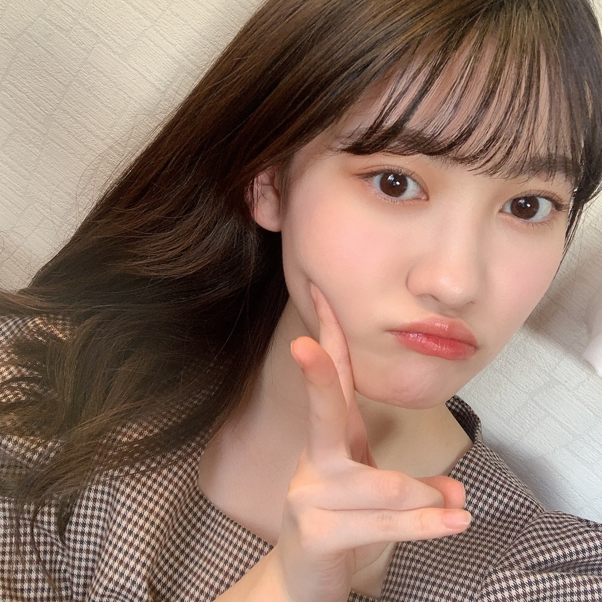

2020/1221Mon1つ 松尾美佑
私が今立っている場所から見える空は
雲がひとつも無いです
すっごく綺麗な水色です
今日も太陽と共にご機嫌な松尾美佑です
アンダーライブ2020、お疲れ様でした！
3日間、有観客と配信という形で本当にお疲れ様でした！
実は私も見に行かせて頂きました¨̮
感染症対策の為に会場では声を出さないで見るという新鮮な形で、
その代わり叫びたい気持ちをスティックバルーンに込めて沢山ポンポンとしていました！
本っ当にかっこよくて、輝いていて、
この気持ちをどの言葉で伝えたら良いのか、
そもそもこの気持ちを全て伝えられるような言葉がこの世にあるのかがちょっとよく分からないのですが、
本当に眩しくて、瞬きが出来なかったです。
かっこいい曲と明るい曲の表情や表現の差も、
本当に同じ方々なのかと不思議に思ってしまうくらいガラッと空気ごと変わって心臓が追いつかなかったです。
何よりも先輩方の仲の良さに元気を貰って、
そして会場全体の一体感を全身で感じて心がギュ〜っとして暖かい空間に包まれました。
アンコールの時に、皆さん声を出せないので
のーぎざか フォーティーシックス
のリズムでスティックバルーンを叩いていて、その音が揃っていて、
本当にその温かさに感動して、なんて素敵なんだろうと気持ちが溢れました。
そのアンコールの時に
客席でサイリウムでハートをかいている方がいらっしゃって、
反対側の客席でそれを見て同じくサイリウムでハートをかいて応えてる方がいらっしゃって、
それを見てハートをかく方が次々増えていて、
本当に皆さんの温かさに心の底から幸せを貰いました。
素敵過ぎる空間にいれたこと、
そんな温かさを作った先輩方、
全てが大切で宝物に思いました。
先輩方、皆さん、幸せな忘れられない時間をありがとうございました！！
私はスティックバルーンを沢山叩いたら片方萎んでしまいました。
今イヤホンで
『ここにいる理由』が流れてますˊᵕˋ
題名:きらきらしたかった日。
あ、最近
幸阪に会いました〜
幸阪茉里乃〜
5億年ぶりくらいな感覚です。
お誕生日おめでとうも伝えられました！！
あとぱるにも会えました〜
あ！！あと
守屋麗奈にも会えました〜！
べびちゃんがお姉さんオーラ出しててびっくりしちゃいました。
みんな可愛すぎて震えました。
明日は〜
なお〜〜〜〜〜〜〜〜〜〜
"と" にちっちゃい "ゆ" は日本語か？と聞かれました。
とゅーーーー
も日本語だよ多分
( ㆀ)( ㆀ)( ㆀ)
次の私のブログの日にはもうクリスマスは終わってるらしい。
あ、皆さんちゃんとサンタさん追跡してますか？
家を通過したら教えてください
❆ ☺︎ ٩
↑季節のご挨拶 (妖精語)
ミュウでした¨̮


ばいっっっっっっ( Ꙭ )/''
コメント(163)
最後の2枚の写真可愛すぎる！！！
今日は時間ないからコメント少なめでごめん！！！
また5日後楽しみにしてるね！！！
埼玉の陽一です。
風邪ひいてないかな。大丈夫かな？
デコ出し大人っぽくて大好きです( ´∀`)
今年も残りわずか。お互い丁寧に過ごしていきましょ～～～
ばいっっっっっっっ( Ꙭ )/''
俺のところも今日天気良かったんだ〜
大学の友達と雪合戦したよ〜
アンダーライブ観たんだね！
俺は都合が悪くて配信も観れなかったんだよなぁ……
観たかった……
きっと素敵なライブだったんだろうな〜
そっか、次のブログの時にはクリスマス終わってるのか
なに貰えたか教えて欲しいな〜
通過したらちゃんと報告する！
それじゃまた5日後に！
じゃあね〜
きらきらしていますよ！
とっても輝いてますとも！！
やはりデコ出しに加えて、髪を横に流すミュウちゃんは美人さんが天元突破してますね！！！！！！
はやく普通にライブできるようになっていっぱい声出したいよね
やっぱり10億年もライブみてないと身体が鈍っちゃうよ〜
まあ幻ポケモンからしたら数十億年くらい大したことないよね〜
早くモバメと個人ブログはじまってクレミア
ミュウツ〜
ミュウちゃん、ライブ行ってたんですね。
大空間で響く音楽。それに呼応する舞台
装置とメンバーのダンス。すばらしいで
すよね。
それにそう、ミュウちゃんの言う通り何
と言っても全体の一体感。
ファンの皆は出来ることで演出を盛り上
げて、なんて健気なんでしょう。
ミュウちゃんは萎むほどスティックバル
ーンを叩いて。
今後の改善点ですね。
ばいっっっ。
お客さんがいる武道館を画面越しから観ただけで、なんか感動してしまいました。
メンバーの熱い思いとファンの熱い声援が最高なアンダーライブだったけど、また新しい形で試行錯誤しながらメンバーは表現してくれて、それにスティックバルーンで答える会場を見てやっぱり温かくて最高だなあって思いました！
ミュウちゃん達をまたいつか直接会場で観てみたいですね！
ps.サンタクロースはコロナにならないってWHOが言ってました。うち通り過ぎたら報告しますねー
みゆた〜ん♪
本当３日間最高でしたねぇ。
これからもずっとミュウを応援してます。
アンダラ見に行ったんだね！！！
サイリウムでハートを書いてるっていうエピソード見て今とってもほっこりした気持ちになったよ〜☺︎
素敵だね☺︎
私まりのちゃんと同じ出身地なの！三重県！
その共通点を言いたかっただけです(笑)
美佑ちゃんのアイシャドウ可愛い！！！❤︎
よかったらメイク道具やメイク方法紹介してくれたら嬉しいな☺︎
美佑ちゃん大好き！❤︎
くるみん
アンダラでしたねー！
３日間家で観てましたが、本当に素敵なステージでした…
素晴らしい先輩方のステージを見て、たくさんの刺激も受けたでしょう。
素敵な先輩方がいて、本当に良かったね。
やっぱりお手本が居るのは大きいと思うので、たくさん吸収できるといいね！
そして、また大きくなるミュウちゃんを見て、我らは感動するわけです…
楽しみです！
それではまた！
くまくまでしたっ！
太陽みたいな微笑み♪
アンダラ感動しましたよね！
会場の臨場感とっても素敵✨
バルーンでの応援も新鮮で、
会場の雰囲気も勉強ですね☆
おでこ出しもキラキラですよ！
ピース写真もクリスマチュー✌
ミュウサンタも似合いますね～☺
アンダラ最高の時間やったね。個人的には滑走路のサビ前の蘭世のどうするの？で毎日尊死よ…あと乃木坂恋のメロディーの麗乃の可愛さと演技力よ…ありゃ良すぎる…
やっぱり箱でのLIVEはいいね。久しぶりに紫で染まる会場に感動したよ。
1日でも早く美佑ちゃんのパフォーマンスしてるのを現場で見たい！
サンタ目撃したらお知らせする！
今日はこの辺で！またブログ更新楽しみにしてるばい！
栃木より愛を込めて。
アンダラ見に行ったんだね
いいなぁ
僕も行きたかった
配信で見るライブもめっちゃ楽しくて素敵な時間だけど
会場で生のライブを見たい
いつかまた生で乃木坂のライブを見られる日を楽しみにしてます
茉里乃ちゃん陽世ちゃん麗奈ちゃんに会えたんだね
僕はミュウにお会いしてその可愛さに震えたい笑
前回のブログにも書いてたね
サンタさんの追跡と妖精語習ったって
サンタさん追跡してみようと思います
妖精語読めない習ったら読めるようになれるのかな?
次のブログも楽しみにしてます
素敵なクリスマスを過ごしてね
ではまたね
ばいばい
とにかく最初から最後までずっと楽しくて、ずっと感動して、最高の3日間だった！
ミュウちゃんと同じ時間過ごせて嬉しい
個人的には珠ちゃんの伸び伸びとしたパフォーマンス、れなちのあざとかわいい仕草と終始笑顔でのパフォーマンスが印象的だったよ
守屋麗奈ちゃんに会ったんだね！
守屋麗奈ちゃんは国宝級の美しさだと個人的には思っていて、尊すぎて推しメンにできないほどだよ
ミュウちゃんももちろん可愛くて綺麗で自慢のメンバーだよ
サンタさん見つからないよ
ミュウちゃんサンタに来てほしい
アンダーの曲は表題曲とは違っていつもパワーを感じて好きな曲が多いなぁ。日常とかアンダーとか新しい世界とか…。
また昔みたいには難しいかもしれないけど生でライブみたくなってきたなぁ。
年末にかけて風邪引かないように気をつけてね。
最近は、寒さが一段と増して「本格的な冬やぁ～！ヽ(^o^)丿クリスマスやぁ～！」って密かに心の中に思っているお兄ちゃんでっす(笑)( *´艸｀)
そして、アンダラ。ミュウ(>o<)ちゃんも見に行ってたのね。僕は４期ちゃんLIVEもアンダラも心の中で見守ってた☆彡
コロナになっちゃってからの「初めての有観客でのLIVE（収容人数半分だけど）」声出せないLIVE。ミュウ(>o<)ちゃんの瞳には新鮮で、何もかもを吸収したい！っていう想いがあったかもしれないね(●´ω｀●)
（僕は、声を出さなくても「手話」という「手で放す」事が出来るから、いつでも会話してるんだけどね(笑)でも、相手も「手話が分かる人じゃないと無理」というデメリットもあるけど(笑)）
大丈夫！ミュウ(>o<)ちゃんは、先日の「４期ちゃんLIVE」で「新４期ちゃん から ４期ちゃん に生まれ変わったし、これからまだまだ乃木活は長いから、その中で自分の個性・やりたい事を見つけていくと、更に輝く原石なんだからぁ～ヽ(^o^)丿」
これからも沢山の事を「自分の眼で見て、耳で聞いて、体を動かして、感情が揺らいで」成長していくと思うから、もっともっと先輩達の事を好きになってね☆彡今以上に(*´Д｀)
そして、つい最近誕生日を迎えた同期である櫻坂の「まりのん」にも会えたみたいだし、ベビちゃんから一転して、大人感が増した「もりれなちゃん」とも会えてよかったね☆彡
何気に、僕も「もりれなちゃん」のあの自然体な感じは好きだなぁ～って思いながらいつも「深夜の坂道３番組」は見てるよ( *´艸｀)
ミュウ(>o<)ちゃんも時々魅せるその大人っぽい表情からは考えられない位「子供っぽい仕草してみたり、しりとりが、めちゃくちゃ弱かったり（ノギザカスキッツＡＣＴ２見てたよ～）」したりするところ。僕は大好きだぞぉ～ヽ(^o^)丿
それじゃあ、次のブログもめっちゃ楽しみにしてるねぇ～♪
明日も一日！一緒にお家時間を楽しもうね♪大好きだよ♪ミュウ(>o<)ちゃん☆彡
みゆちゃん今日も可愛いです。
みゆちゃん今日も１日お疲れ様です。
今日はお仕事でした。
今日は疲れて大変でした。
今日は六連勤の四日目が終わりました。
後二日頑張ります。
これからもお仕事頑張って下さい。
自分もお仕事頑張ります。
こないだウエストベルトの生写真届きました。
みゆちゃんの生写真出ました。
凄く可愛いです。
これからもみゆちゃんの生写真集めていきます。
これからのブログを楽しみにしてます。
今年ももう終わりだね〜
あっという間だ_(:3 」∠)_
サンタさん見つけられてないや。
きっと忙しいんだね♫
5日後のブログ更新も楽しみに待ってる(^^)
体調に気をつけてお仕事頑張ってね！！
本当に晴れの日ばかりですよね。晴れ女のみゆちゃんの力でしょうか笑
今日もご機嫌とは何よりです！
アンダラ参戦羨ましいです！配信で観れば良かったと結構後悔してます...
下2つの写真めっちゃ好きです！
みゆちゃんはクリスマス何もらいましたか？
年内にやりたいことはありますか？
26日も期待してます。
ミュウちゃん今日もかわいいです(◍︎´꒳`◍︎)
なかなかね、こういう状況下で有観客でのライブできないからねぇ(*´∀｀)
酷くなってきてたし、無事できてよかったよね！！
またミュウちゃんのパフォーマンスもみたいなぁ٩(ˊᗜˋ*)و
そういえば！！
密かにミュウちゃんのミーグリを取ったでやんす(*´ω｀*)
近々お話できたらいいなぁと(*^ω^*)
わいのとこサンタさん多分来ないと思います(´・ω・｀)←
ミュウちゃんとこ来たら教えてください(◍︎´꒳`◍︎)
んなほなねʕ•ᴥ•ʔうみちゃん
のミュウちゃん綺麗だよ～♪
あと最後のピースを2枚
載せたかった日もかわいいよ～♪
アンダラの感想ありがとう〜！！やっぱり観客有りのライブは良いよね涙
いつになったら再開できるんだろ？？早く美佑ちゃんのパフォーマンス近くで観たいな涙
アンダーの曲ってどの曲も良いよね。
ここにいる理由、咄嗟、日常、ブランコが特に好きで。
美佑ちゃんが好きなアンダーの楽曲はある？？
ぜひ教えてね！！
おもちより
みゆ！
やっほー！
ひろき(Yandji)です☺️
ブログ更新ありがとー！！！
質問タイムー！！！
クリスマスケーキといえば何ケーキ？
また、コメントするね！
では、またねー！
ひろき(Yandji)より
アンダーライブとてもよかったですね！！はやくライブでの美佑ちゃんをみたいです！！
最後の写真が可愛すぎておどろきました笑
ノギザカスキッツ次のやつたのしみです！！
またコメント書きます！！
今日はホントに空が綺麗だったね。。。おいらも仕事中思わず空を見上げてしばらく眺めてたよ（*´∀｀*）
アンダーライブ、おいらも二日目会場に見に行けたよ♪
久しぶりにステージにいる乃木坂メンバーを自分の目で生で見られてすっごくうれしかったヾ(≧▽≦)ﾉ
今回はステージ上にミュウちゃんはいなかったけど次はステージの上で歌って踊るミュウちゃんを同じ空間で応援できたらいいな♪
確かに麗奈ちゃん最近とっても大人びてキレイなお姉さん感出てきたよね(n*´ω`*n)
キレイなお姉さんと言えば今夜のノギザカスキッツでミュウちゃんもキレイなお姉さんになるね♪
もちろんリアタイで見るよo(^-^o)(o^-^)o
それじゃまたねー＼(*⌒0⌒)b
僕もアンダラ観てきました。会場でのライブを観るのは8thバスラ以来だったのですごく楽しくて、今まで当たり前に会場で盛り上がれてたことはありがたいことだったと実感しました。
この前の4期ライブは配信だったけど、1日でも早く4期生のパフォーマンスが生だ観れることを楽しみにしてます！！
26thのミーグリ取らせて貰ったので1/31まで楽しみに待ってます
ちょっと早いけど次のブログのときにはもう過ぎてしまってるということで
ほんとに最近癒されてます。
ブログリレーが回って来るのが待ち遠しいです
これからも頑張ってください
待望久しい有観客となった『アンダーライブ』。会場で過ごした臨場感の余韻冷めやらぬ思いが伝わって来ます。忘れ得ぬライブになって何より。今度は全員がステージに集う姿が待ち遠しい限り♪
Wishing you a very Merry Christmas.
サンタさん追跡頑張ります
サンタさんの地図には、ウチは掲載されていないようです。
(^^)
私も配信でアンダラ見ました。乃木坂46のライブはどれも心のこもった、感動的なライブになりますね。もうこれは立派な芸術と言って良いと思います。
4期生ライブも見ました。まだ緊張が強くて、失敗しないよう必死な感じが、逆に応援したくなります。
次のライブはおそらくバスラになりますかね。特に4期生は200曲以上を覚えなければならないので、大変ですね。その前に26thリリースがあります。頑張ってね！！
ではまた。
昨日のアンダーライブ友達と一緒に見てたよ～ ノンストップ披露ってすごいね！楽しい時間は一瞬ってあの事を言うんだね あの楽しい時間でアンダーの歴史を感じることが出来たし、スクリーンに過去の映像を流すとかエモエモじゃん！
とにかく、演出がよかっなー 個人的に日常の上からのカメラワークで鳥肌が止まらなかったよ！
今回も言わせてください ミュウ可愛すぎるーーーーーーーー！なんでそんなにかわいいんですか 大人っぽすぎる！
まるで女神のような美しさだね 早く握手会であいたいなー
あと、今日のノギスキめっちゃ楽しみ！かつ屋でミュウはどんな役をやるのかなー これは鬼リピート確定だな 何回もかつが欲しいです！
次のブログのときにはクリスマスが終わってるね ミュウサンタからの遅めのプレゼント欲しいなー
まってます！
そろそろ今年ラストのブログになるね ブログを読むの楽しみにしてるね！
妖精語って打ったら要請後って出た、、笑
サンタさんにプレゼントの要請後にコメント書いてます。。
あれ？サンタさんもうそこの角まで来ちゃってるよ～。
あわてんぼうさんだなぁ。
まだちょっと早いっすよ～。
あの～、ここって松尾美佑のコメント書くとこですよね？
幼稚園の掲示板じゃないっすよね？
はい。ちゃんとします。
アンダーライブ結局お仕事で見れなかったんだけど、メンバーのブログやモバメと僕の妄想力で見えましたよ～。笑
でもアンコールの時の｢の～ぎざかっ、フォーティーシックス！｣ってのが声出せないってところまでは気付かなかった！
確かにそうだよね！
ファンの人たちも全力で知恵を絞ったんだね！
ホント温かいなぁ。
会場で直接見れて、ミュウちゃんもまた早くライブしたくなったんじゃない？
次の乃木坂46の大きなライブはもうバースデーライブになるのかな？
その頃にはまた有観客で楽しめたらいいね！
ライブ行けたんだね！バルーン萎むほど楽しめたみたいでよかった\( ˆoˆ )/
ミュウサンタ来ると良いなぁ〜（笑）
またね！
デコだし特に可愛くて好きです
アンダラよかったね、いつかミュウちゃんも現地で見たいな〜
とりあえずミーグリ取れたので話せる日を楽しみにしてます(^｡^)
アンダーライブを見にいかれたのですね！純粋に楽しまれたのでしたら良いですね。
この前誕生日でした幸坂さんと５億年ぶりに再会されたそうで、良かったですね、なんか数字が天文学的ですね！守屋玲奈ちゃんやぱるちゃんにも会えるて姉妹グループでも同期みたいのも良いですね。
ラジオショッピングでカニがでたんだけど、あまりカニを食べないので、高いのか安いのかわからないのでスーパーに行った時に値段見てきたら通販の方が安そうですね、なんかラジオショッピングっぽい事してみたくなったので、以下をソレっぽく読んでみてください。
いやぁ〜クリスマスももう目前！皆様どんな音楽を聞いて過ごされていますか？クリスマスソングって一人きりのクリスマスイブとかsomeone special とかハッピーでないのが結構名曲でありますよね！しかし今年は大切な人を大切に思う歌なんてどうでしょうか？今回紹介するのは、宇多田ヒカルさんの”Can’t Wait ‘Till Christmas “ですシンプルに大切な人思う歌もオツでございますよ！今なら宇多田ヒカルさんの“COLORS”もおつけしてお届けします。それでは、、、、って感じでコントでもどうですか。
良く「家に帰るまでが遠足です」って下校時言われると思いますが、日本特有の言い回しなのですかね？キラキラ写真大人っぽいです。
おやすみ
コメントする

PROFILE
新4期生リレー
202104
| SUN | MON | TUE | WED | THU | FRI | SAT |
|---|---|---|---|---|---|---|
| 1 | 2 | 3 | ||||
| 4 | 5 | 6 | 7 | 8 | 9 | 10 |
| 11 | 12 | 13 | 14 | 15 | 16 | 17 |
| 18 | 19 | 20 | 21 | 22 | 23 | 24 |
| 25 | 26 | 27 | 28 | 29 | 30 | |

毎度可愛いみゆちゃん〜
クリスマス〜
サンタみゆちゃんも見たいな〜